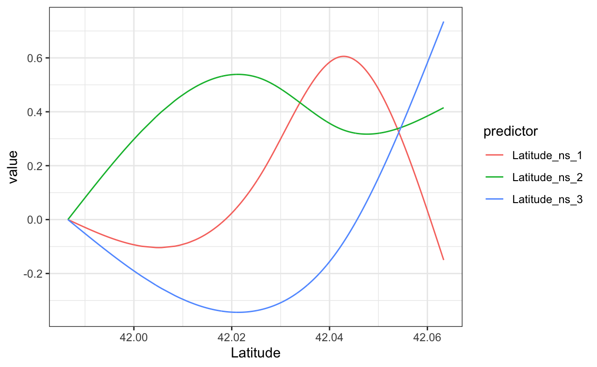
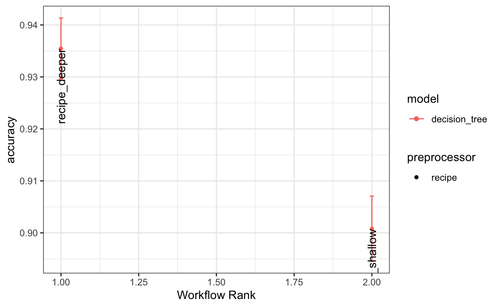
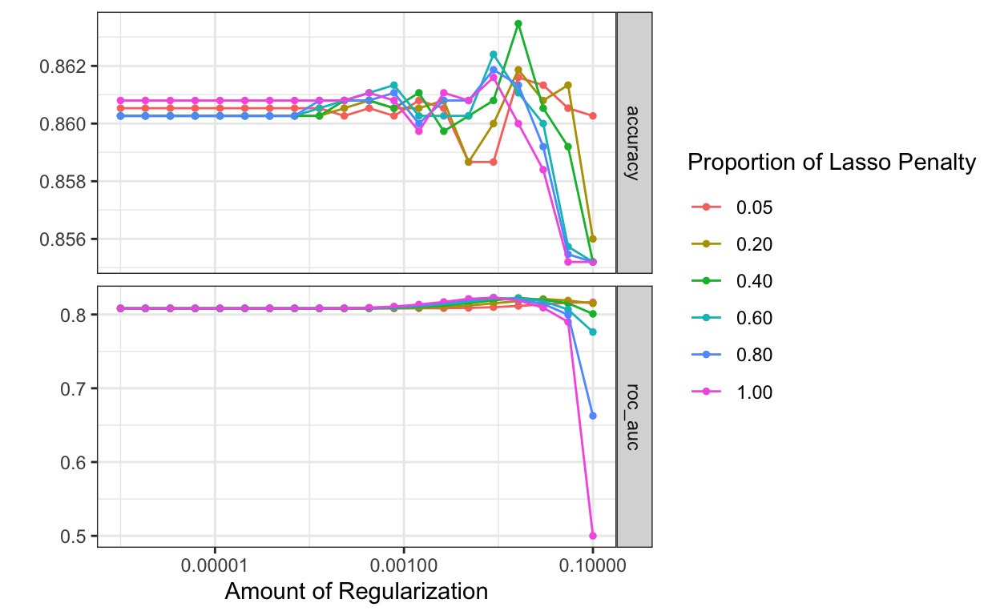

The goal of this exercise is to …
data(ames, package = "modeldata")
ames_all <- ames %>%
filter(Gr_Liv_Area < 4000, Sale_Condition == "Normal") %>%
mutate(across(where(is.integer), as.double)) %>%
mutate(Sale_Price = Sale_Price / 1000)
rm(ames)Warning in rm(ames): object 'ames' not foundmetrics <- yardstick::metric_set(mae, rsq_trad)
set.seed(10) # Seed the random number generator
ames_split <- initial_split(ames_all, prop = 2 / 3)
ames_train <- training(ames_split)
ames_test <- testing(ames_split)
ames_with_split_marked <- bind_rows(
train = ames_train,
test = ames_test,
.id = "split"
) %>% mutate(split = as_factor(split))One simple but important thing that affects some models’ performance is preprocessing, or more generally, feature engineering. Two big reasons:
Let’s see a cool example with linear regression. Normally you’d expect linear regression to only be able to fit lines, but with some transformation, we can get it to make nuanced predictions.
We’ll need some new code concepts, though: a workflow represents a complete modeling process, including both the model specification and optionally some a recipe that handles the preprocessing.
Here’s what linear regression looks like with a recipe. We’ll start with a blank recipe. (It just extracts the columns we ask for.)
linreg_recipe <- recipe(
Sale_Price ~ Latitude + Longitude,
data = ames_train)
linreg_workflow <- workflow(
preprocessor = linreg_recipe,
spec = linear_reg()
)
# Fit the entire workflow
linreg_fit <- fit(linreg_workflow, data = ames_train)
# show the model in data space
show_latlong_model(
ames_train,
linreg_fit
)
# Evaluate it on the test set
augment(linreg_fit, ames_with_split_marked) %>%
group_by(split) %>%
metrics(truth = Sale_Price, estimate = .pred)We can add a preprocessing step by piping the recipe through some step_s. For example, we can add a spline transformation of the Latitude column by adding a %>% and then step_ns(Latitude, deg_free = 2).
(You may have heard of polynomial regression, where we make a feature for x^2, x^3, etc., and that lets us make curve-shaped predictions because our prediction equation now looks like c1 * x^2 + c2 *x + c3 or the like. Spline transformations are the same basic idea, but are better behaved.)
linreg_recipe <- recipe(
Sale_Price ~ Latitude + Longitude,
data = ames_train) %>%
step_ns(Latitude, deg_free = 3)
# Show an example of what the recipe output looks like. We don't generally need to use these functions.
linreg_recipe %>%
prep(training = ames_train) %>%
bake(ames_train) %>%
select(starts_with("Latitude")) %>%
bind_cols(select(ames_train, Latitude)) %>%
pivot_longer(cols = !Latitude, names_to = "predictor") %>%
ggplot(aes(x = Latitude, y = value, color = predictor)) + geom_line()
Exercise: Try adding a few preprocessing steps. For each one, write in your notes (1) How does the visualization of the model’s predictions (in data space) change, and (2) How does the accuracy change? Don’t be overly concerned about the exact accuracy values; just note whether a step seems to help or not.
step_ns() shown above to the recipe.Latitude by all_numeric_predictors().deg_free to 2, 3, or 4.step_ns step by step_discretize(all_numeric_predictors()).step_discretize step by step_interact(~ starts_with("Latitude") : starts_with("Longitude")).step_interact, add step_normalize(all_numeric_predictors()) and try again.Note that we need to give
recipeadataparameter. This is the template data, just used to tell the recipe what columns there are and what data type each one has. It does not actually train on this data!
Note: this did not use any kind of cross-validation; we just kept peeking at our testing set. Let’s fix that!
Suppose we declare that we want to evaluate models using 6-fold cross-validation:
ames_resamples <- vfold_cv(ames_train, v = 6)Here are the sizes of the training and test sets:
Exercise: How many homes are in one fold?
Exercise: When performing cross-validation using these resamples, how many homes will be used for fitting models?
Exercise: When performing cross-validation using these resamples, how many homes will be used for evaluating the performance of fitted models?
We’ll use a dataset about predicting whether a customer will churn (cancel their service) or not. See mlc_churn for more details.
data("mlc_churn", package = "modeldata")
skimr::skim(mlc_churn)| Name | mlc_churn |
| Number of rows | 5000 |
| Number of columns | 20 |
| _______________________ | |
| Column type frequency: | |
| factor | 5 |
| numeric | 15 |
| ________________________ | |
| Group variables | None |
Variable type: factor
| skim_variable | n_missing | complete_rate | ordered | n_unique | top_counts |
|---|---|---|---|---|---|
| state | 0 | 1 | FALSE | 51 | WV: 158, MN: 125, AL: 124, ID: 119 |
| area_code | 0 | 1 | FALSE | 3 | are: 2495, are: 1259, are: 1246 |
| international_plan | 0 | 1 | FALSE | 2 | no: 4527, yes: 473 |
| voice_mail_plan | 0 | 1 | FALSE | 2 | no: 3677, yes: 1323 |
| churn | 0 | 1 | FALSE | 2 | no: 4293, yes: 707 |
Variable type: numeric
| skim_variable | n_missing | complete_rate | mean | sd | p0 | p25 | p50 | p75 | p100 | hist |
|---|---|---|---|---|---|---|---|---|---|---|
| account_length | 0 | 1 | 100.26 | 39.69 | 1 | 73.00 | 100.00 | 127.00 | 243.00 | ▂▇▇▂▁ |
| number_vmail_messages | 0 | 1 | 7.76 | 13.55 | 0 | 0.00 | 0.00 | 17.00 | 52.00 | ▇▁▂▁▁ |
| total_day_minutes | 0 | 1 | 180.29 | 53.89 | 0 | 143.70 | 180.10 | 216.20 | 351.50 | ▁▃▇▅▁ |
| total_day_calls | 0 | 1 | 100.03 | 19.83 | 0 | 87.00 | 100.00 | 113.00 | 165.00 | ▁▁▇▇▁ |
| total_day_charge | 0 | 1 | 30.65 | 9.16 | 0 | 24.43 | 30.62 | 36.75 | 59.76 | ▁▃▇▅▁ |
| total_eve_minutes | 0 | 1 | 200.64 | 50.55 | 0 | 166.38 | 201.00 | 234.10 | 363.70 | ▁▂▇▅▁ |
| total_eve_calls | 0 | 1 | 100.19 | 19.83 | 0 | 87.00 | 100.00 | 114.00 | 170.00 | ▁▁▇▇▁ |
| total_eve_charge | 0 | 1 | 17.05 | 4.30 | 0 | 14.14 | 17.09 | 19.90 | 30.91 | ▁▂▇▅▁ |
| total_night_minutes | 0 | 1 | 200.39 | 50.53 | 0 | 166.90 | 200.40 | 234.70 | 395.00 | ▁▃▇▃▁ |
| total_night_calls | 0 | 1 | 99.92 | 19.96 | 0 | 87.00 | 100.00 | 113.00 | 175.00 | ▁▁▇▆▁ |
| total_night_charge | 0 | 1 | 9.02 | 2.27 | 0 | 7.51 | 9.02 | 10.56 | 17.77 | ▁▃▇▃▁ |
| total_intl_minutes | 0 | 1 | 10.26 | 2.76 | 0 | 8.50 | 10.30 | 12.00 | 20.00 | ▁▃▇▃▁ |
| total_intl_calls | 0 | 1 | 4.44 | 2.46 | 0 | 3.00 | 4.00 | 6.00 | 20.00 | ▇▅▁▁▁ |
| total_intl_charge | 0 | 1 | 2.77 | 0.75 | 0 | 2.30 | 2.78 | 3.24 | 5.40 | ▁▃▇▃▁ |
| number_customer_service_calls | 0 | 1 | 1.57 | 1.31 | 0 | 1.00 | 1.00 | 2.00 | 9.00 | ▇▅▁▁▁ |
Note that most customers didn’t churn, so predicting “no” would be right much of the time. Any model should do better than this:
mlc_churn %>% count(churn) %>% mutate(frac = n / sum(n))We’ll compare the performance of two models using cross validation. First, let’s declare the resamples to use:
churn_split <- initial_split(mlc_churn)
churn_resamples <- training(churn_split) %>% vfold_cv(v = 5)Now let’s define the two models. Let’s compare a decision tree at two different tree depths.
tree_recipe <- recipe(churn ~ ., data = mlc_churn)
tree1 <- decision_tree(mode = "classification", tree_depth = 3)
tree2 <- decision_tree(mode = "classification", tree_depth = 30)
# Tree 1
fit_resamples(
workflow(preprocessor = tree_recipe, spec = tree1),
resamples = churn_resamples
) %>% collect_metrics()Warning: package 'rpart' was built under R version 4.1.2# Tree 2
fit_resamples(
workflow(preprocessor = tree_recipe, spec = tree2),
resamples = churn_resamples
) %>% collect_metrics()But that’s a lot of copy-and-paste code. workflows give us an easier way:
# Construct a bunch of workflows by applying the same preprocessing recipe to a bunch of different models.
churn_workflows <- workflow_set(
preproc = list(tree_recipe),
models = list(shallow = tree1, deeper = tree2))
churn_workflowsA workflow set is just a data frame of model specifications.
scores <- churn_workflows %>%
workflow_map(
fn = "fit_resamples",
resamples = churn_resamples
)autoplot(scores, metric = "accuracy") +
geom_text(aes(y = mean, label = wflow_id), angle = 90, nudge_x = .05, color = "black")
We see that the deeper tree has higher accuracy.
Use the code area below to try another few models. You might try a different hyperparameter on the decision tree, or a different kind of model entirely.
tree_recipe <- recipe(churn ~ ., data = mlc_churn)
tree1 <- decision_tree(mode = "classification", tree_depth = 3)
tree2 <- decision_tree(mode = "classification", tree_depth = 30)
# Construct a bunch of workflows by applying the same preprocessing recipe to a bunch of different models.
churn_workflows <- workflow_set(
preproc = list(tree_recipe),
models = list(shallow = tree1, deeper = tree2))
# Evaluate all the CV scores.
scores <- churn_workflows %>%
workflow_map(
fn = "fit_resamples",
resamples = churn_resamples
)
# Plot the results
autoplot(scores, metric = "accuracy") +
geom_text(aes(y = mean, label = wflow_id), angle = 90, nudge_x = .05, color = "black")# This was created using:
#usemodels::use_glmnet(churn ~ ., data = mlc_churn)
glmnet_recipe <-
recipe(formula = churn ~ ., data = mlc_churn) %>%
step_novel(all_nominal_predictors()) %>%
step_dummy(all_nominal_predictors()) %>%
step_zv(all_predictors()) %>%
step_normalize(all_numeric_predictors())
glmnet_spec <-
logistic_reg(penalty = tune(), mixture = tune()) %>%
set_mode("classification") %>%
set_engine("glmnet")
glmnet_workflow <-
workflow() %>%
add_recipe(glmnet_recipe) %>%
add_model(glmnet_spec)
glmnet_grid <- tidyr::crossing(penalty = 10^seq(-6, -1, length.out = 20), mixture = c(0.05,
0.2, 0.4, 0.6, 0.8, 1))
glmnet_tune <-
tune_grid(glmnet_workflow, resamples = churn_resamples, grid = glmnet_grid) Then we can summarize the results:
collect_metrics(glmnet_tune)autoplot(glmnet_tune)
And show just the best ones.
show_best(glmnet_tune)Warning: No value of `metric` was given; metric 'roc_auc' will be used.For more details, especilly for doing this on many models at once, see Tidy Modeling with R.
To run any code chunk from this tutorial in your own environment, use:
library(tidyverse)
library(tidymodels)
theme_set(theme_bw())
options(scipen = 5) # encourage metrics to print in fixed-point notation
options(dplyr.summarise.inform = FALSE) # silence a warning message
data(ames, package = "modeldata")
ames_all <- ames %>%
filter(Gr_Liv_Area < 4000, Sale_Condition == "Normal") %>%
mutate(across(where(is.integer), as.double)) %>%
mutate(Sale_Price = Sale_Price / 1000)
rm(ames)
metrics <- yardstick::metric_set(mae, rsq_trad)
set.seed(10) # Seed the random number generator
ames_split <- initial_split(ames_all, prop = 2 / 3)
ames_train <- training(ames_split)
ames_test <- testing(ames_split)
ames_with_split_marked <- bind_rows(
train = ames_train,
test = ames_test,
.id = "split"
) %>% mutate(split = as_factor(split))
ames_resamples <- vfold_cv(ames_train, v = 6)
data("mlc_churn", package = "modeldata")
skimr::skim(mlc_churn)
churn_split <- initial_split(mlc_churn)
churn_resamples <- training(churn_split) %>% vfold_cv(v = 5)
lat_long_grid <- expand_grid(
Latitude = modelr::seq_range(ames_train$Latitude, n = 200, expand = .05),
Longitude = modelr::seq_range(ames_train$Longitude, n = 200, expand = .05),
)
show_latlong_model <- function(dataset, model, model_name = deparse(substitute(model))) {
ggplot(dataset, aes(x = Longitude, y = Latitude)) +
geom_raster(
data = augment(model, lat_long_grid),
mapping = aes(fill = .pred)
) +
geom_point(color = "black", size = .75) +
geom_point(aes(color = Sale_Price), size = .5) +
scale_color_viridis_c(aesthetics = c("color", "fill"), limits = range(dataset$Sale_Price)) +
coord_equal(expand = FALSE) +
guides(fill = "none") +
labs(title = model_name) +
theme_minimal()
}